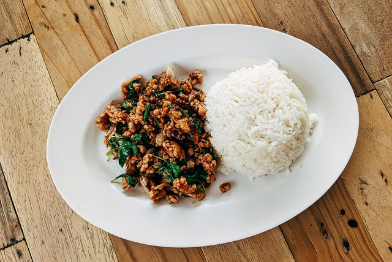

Pad Kra Pao (Thai Ground Pork Basil Stir Fry)

Image by
Markus Winkler via Pixabay.
Description
A spicy and earthy staple for Thai home cooking.
Ingredients
- 300 g ground pork (sub. beef or chicken)
- 5 (more or less) thai red chilli peppers, minced
- 5 garlic cloves, minced
- A package of thai basil leaves
(sub. holy basil or italian basil)
- Vegetable oil to coat pan
- 1 tbsp oyster sauce
- 1 tbsp soy sauce
- 2 tsp fish sauce
- 1 tsp dark soy sauce
- 1 sunny side up egg to serve
Steps
- Preheat a pan medium-high for about a minute. Saute
the minced garlic and peppers in oil and stir until the garlic
turns golden.
- Add the ground pork and stir and break up the meat until
there's no big clumps and the size of the meat is even throughout.
- Add the sauces and continue stirring until well-combined
and the meat is fully cooked. (Add water bit-by-bit if the
sauce is too dry until desired consistency.)
- Turn off the heat and toss in the basil leaves until
fully wilted.
- Serve with steamed white rice and a fried egg.
Home